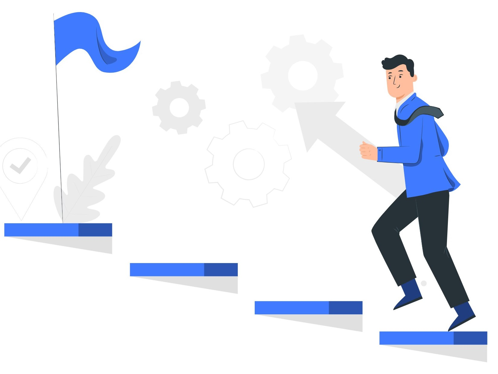
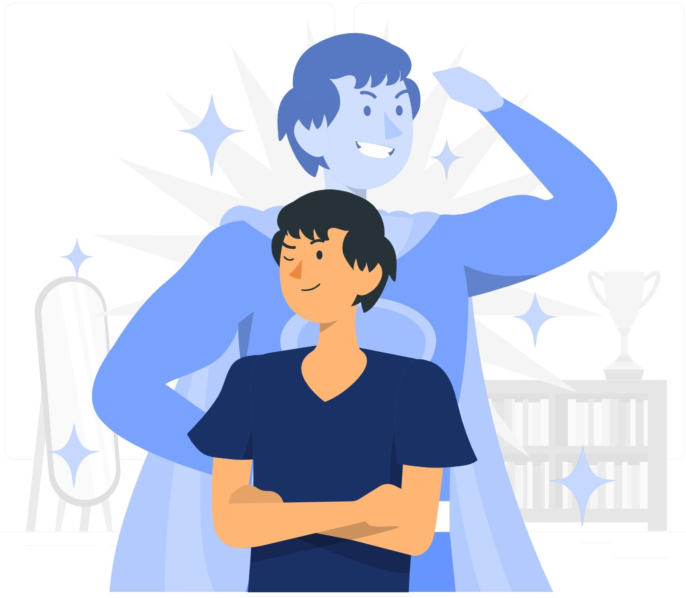
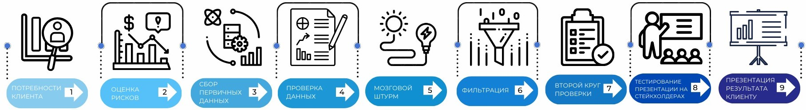
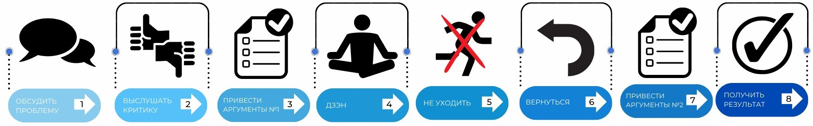
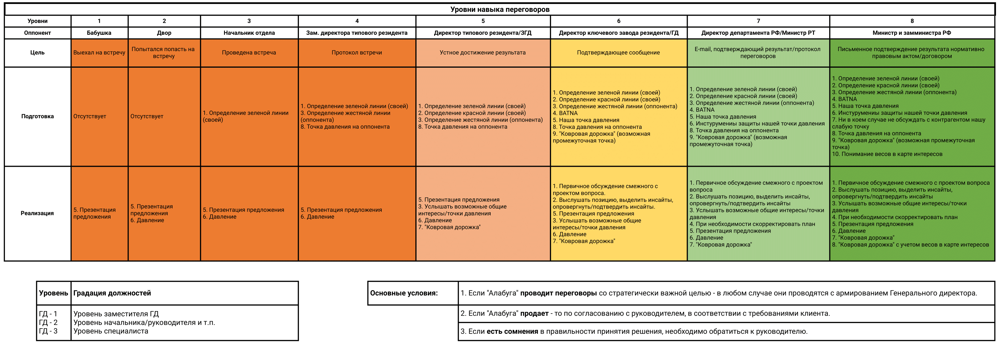
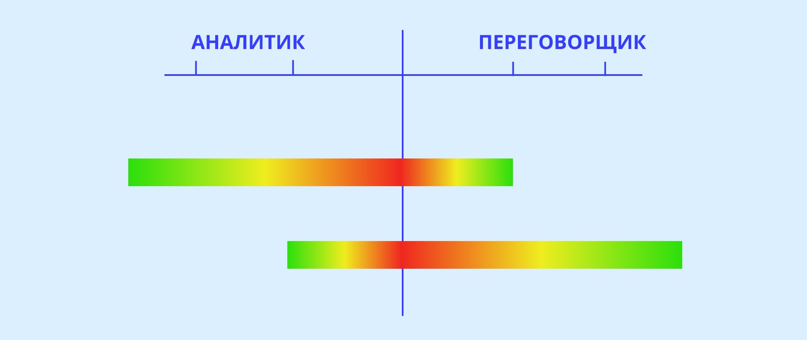
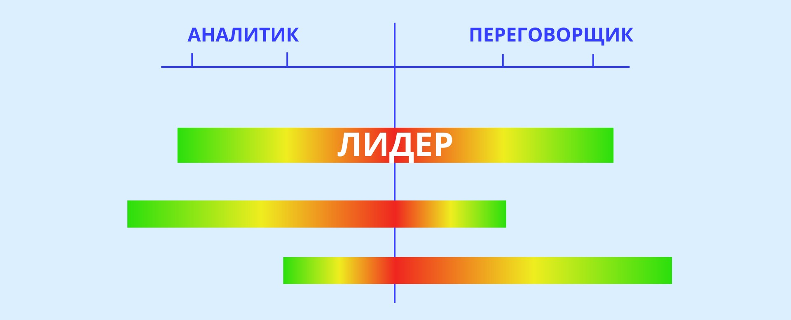
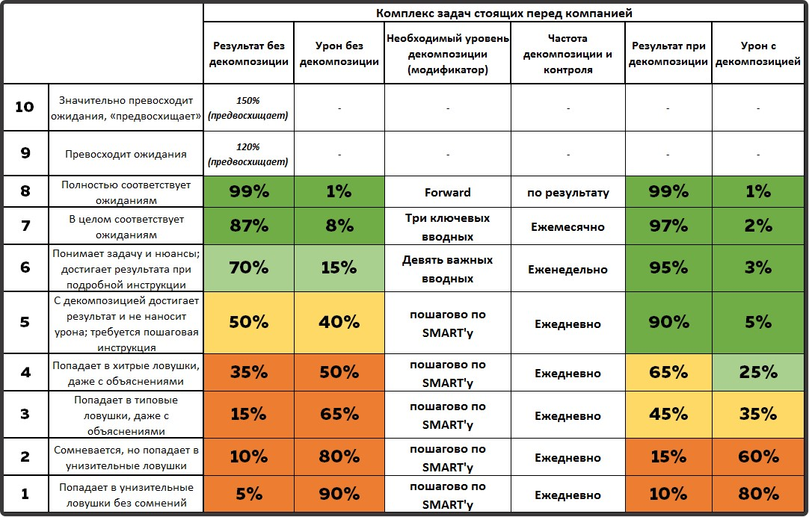
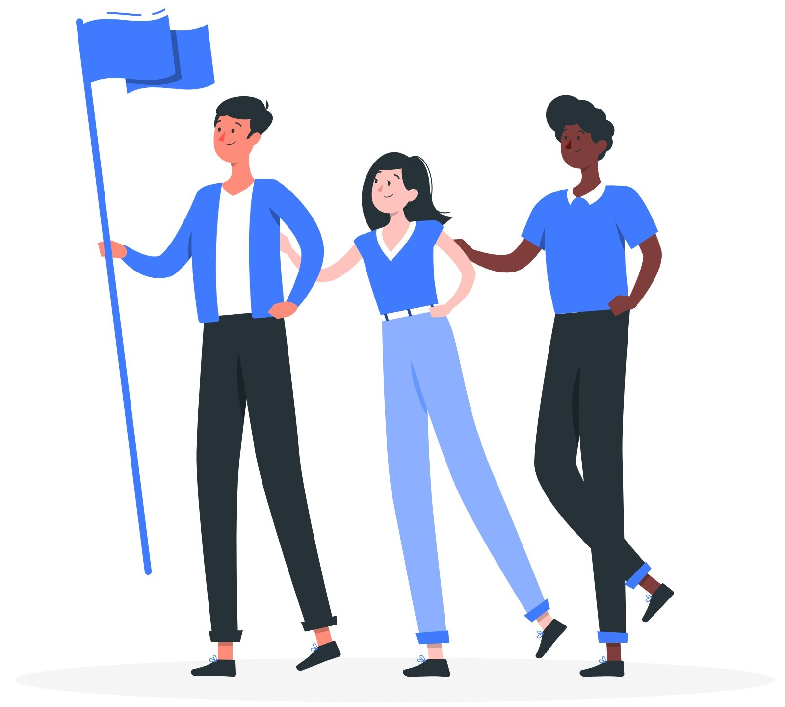

Миссия компании
«Мы растим промышленность для благополучия людей, создавая лучшую в мире инфраструктуру».
Нам предстоит не просто привлекать новых инвесторов в заводы, как мы делали это на протяжении 10 первых лет
существования «Алабуги». Сегодня стоит задача растить и развивать новые российские производства – у нас есть
для этого и знания, и собственные ресурсы, и хорошие отношения с федеральными институтами развития.
Сами по себе заводы – это не самоцель. Но заводы – это налоги для государства и это заработная плата для
людей. Поэтому в конечном итоге, мы все делаем для благополучия людей.
Лучшая в мире инфраструктура – это не только автомобильные и железные дороги, электричество и водопровод.
Сейчас мы должны создать лучшую в мире инфраструктуру поддержки роста новых производств. Это предполагает и
финансовую, и HR-инфраструктуру.
Основные компетенции
стремление к большему
Главная мотивация в нашей компании.

Если довольствоваться тем, чего уже добился – начнется деградация. Не будет необходимости в приобретении новых
знаний и навыков, постепенно будут забываться те, которые были приобретены ранее, так как отпадет нужда в их
использовании. Чтобы к чему-то стремиться, всегда нужны цели. Поставленные цели проясняют, во что мы вкладываем
свои ресурсы.
Стремление к большему увеличивает эффективность любой деятельности.
Если человек хочет повысить собственную квалификацию, он самостоятельно обучается, совершенствует свои навыки и
компетенции. Даже маленькие позитивные шаги вперед могут привести к достижению цели.
вера в дело

Человек хочет развиваться, совершенствоваться и добиваться новых целей, только в случае
искренней веры в свое дело. Когда он точно знает: зачем он это делает и к чему это приведет.
Вера в дело - фундамент, на котором строятся остальные компетенции нашей компании.
выход из зоны комфорта по аналитике
алгоритм аналитики:

Нажмите на картинку, чтобы увеличить

Нажмите на картинку, чтобы увеличить
Маржа — это разница между себестоимостью товара и ценой, по которой продают товар. В себестоимость
входят все издержки на производство, закупку, упаковку и логистику товара, в том числе траты на сырьё, газ,
свет и зарплату сотрудников.
Хвостик — 5% * наша оценка себестоимости + маржа контрагента (сумма в резерве).
Расчет NPV (Net Present Value) — Чистая приведённая стоимость - финансовый показатель, который
демонстрирует ожидаемый будущий доход проекта за вычетом его первоначальной стоимости. Проще говоря, NPV
позволяет сравнить текущие деньги с будущими деньгами, которые из-за инфляции будут стоить дешевле. Если
показатель NPV больше 0, проект считается эффективным
выход из зоны комфорта по общению
алгоритм переговоров:

Нажмите на картинку, чтобы увеличить

Нажмите на картинку, чтобы увеличить
Зеленая линия — условие, в котором вторая половина точно уверена, то, чего оппонент или вы хотите
добиться от переговоров.
Красная линия — это то условие, ниже которого вторая сторона не опустится, но его еще можно переубедить.
Жестяная линия — это то условие, ниже которого вторая сторона не опустится никогда не при каких условиях.
Точка давления оппонента — слабое место оппонента, на которое в ходе переговоров можно надавить, с целью
достижения наиболее выгодного результата.
Ковровая дорожка — предложение оппоненту выгодных условий, после оказания на него давления, от которых он
с большой вероятностью не сможет отказаться.
BATNA (best alternative to negotiated agreement) — лучший альтернативный вариант к достигнутым
договоренностям (наиболее выгодная альтернатива курсу действия).
Система компетенций создана для координации задач и сотрудника, который с ней справится.
В зависимости от
уровня компетенции сотрудника, мы можем выявить вероятность выполнения задачи - т.е. достижения результата!
От рождения люди более тяготеют либо в сторону аналитики, либо в сторону общения.

Но в условиях постоянно меняющегося мира, наши сотрудники должны развивать в себе обе эти компетенции.

Мы разработали наглядные таблицы по Уровню навыка переговоров и Уровню Аналитики. Ориентируясь на эти таблицы,
каждый сотрудник может понять свой текущий уровень, а также стремиться к большему, принимая все более сложные
вызовы.
амбиции по аналитике:
- лучшие мировые практики
- мировые практики
- федеральный уровень
- региональный уровень
- муниципальный уровень
- сельмаг
- двор
- бабушка
амбиции по общению:
- министр и замминистра рф
- руководитель федерального холдинга/директор департамента рф/министр рт
- директор ключевого завода резидента (более 3 млрд.руб.выручки)/мэр/гд/замминистра рт/зам.директора департамента рф
- директор типового резидента/згд/региональный начальник управления
- зам.директора типового резидента/региональный начальник отдела
- отдел
- двор
- бабушка
Декомпозиция
Мы уверены, что каждый наш сотрудник обладает лидерским потенциалом, вне зависимости от того, хочет он
развиваться как профессионал (создавая твердый фундамент для работы компании) или как лидер (готовый к новым
масштабным задачам в рамках страны).
С другой стороны, мы также можем заранее подготовиться к "урону", который может принести невыполнение
задачи!

Нажмите на картинку, чтобы увеличить
Уровни декомпозиции определяют насколько разъясненно и обоснованно ставится задача перед сотрудником, сколько
вводных данных необходимо дать, насколько конкретную цель ставить.
Декомпозиция — операция мышления, состоящая в разделении целого на части. Также декомпозицией
называется общий приём, применяемый при решении проблем, состоящий в разделении проблемы на множество
частных проблем, а также задач, не превосходящих суммарно по сложности исходную проблему, с помощью
объединения решений которых, можно сформировать решение исходной проблемы в целом.
SMART (specific, measurable, achievable, relevant, time bound) — это конкретная, измеримая,
достижимая, значимая, ограниченная во времени цель (КИДЗО).
Forward — уровень, при котором не нужны вводные, организованное, не требуемое дополнительных
разъяснений достижение целей.
Лидерство

Лидер — тот, кто берет ответственность за себя и за других людей и добивается результата.
Лидер всегда стремится к большему. Лидер находится в постоянном движении. Достигнув одной своей цели, он
ставит следующую, еще масштабнее и амбициознее. Его никогда не устраивает то, что он имеет сейчас, он
стремится качественно и количественно повышать свои профессиональные и личные компетенции, выходить на
новые уровни развития.
▲
Главный учитель лидера — это его прошлые ошибки. Лидер не боится ошибаться. Он знает, что каждая
ошибка — это урок, который позволит ему стать лучше. Он работает над своими ошибками, чтобы не повторять их
в будущем. И в следующий раз, оказавшись в этой ситуации, он уже точно будет знать, как повести себя и как
выжать из нее максимум.
▲
Лидер чаще находится вне зоны своего комфорта, чем внутри неё. Любое развитие — это трудно. Чтобы
мышцы росли, они должны болеть, чтобы освоить новый навык нужно потратить не только время, но и свои силы, а
что уж говорить о публичном выступлении перед полным залом неизвестных тебе людей. Но за выход из зоны
комфорта полагается самая лучшая награда твои победы, победы над самим собой, победы, которые отличают тебя
сегодняшнего от тебя вчерашнего. Любой лидер проходит через это, поэтому он точно знает главный секрет зоны
комфорта «Делая то, что тебе не нравится сегодня, ты получаешь то, что хочешь завтра».
Энергия - главный ресурс лидера и он осознанно управляет ей. Лидер — это человек, который заряжает
энергией других. И чтобы делиться своей энергией с другими, он сам должен быть в постоянном энергетическом
тонусе. В условиях решения все возрастающих по сложности задач, общением с большим количеством людей и
участием в разнообразных мероприятиях, ключевым навыком лидера становится расстановка своих энергетических
приоритетов. Лидер умеет грамотно расходовать свою энергию, держать ее баланс и вовремя наполнять резервуары
своих сил новыми запасами.
Лидер - владелец процесса, а не наемный рабочий. Мышление лидера отличается от мышления большинства.
Лидер является таким же собственником компании, как и ее акционеры. Вне зависимости от должности, которую он
занимает, он берет на себя ответственность. Лидер не делегирует проблему наверх - он предлагает решения.
Если он видит неэффективность, то старается устранить ее, если видит проблему, то решает ее. Каждый лидер
рад, когда у него появляется возможность взять ответственность на себя и принести пользу не только самому
себе, но и своей компании.
▲
Лидер ориентирован на лучшие мировые практики. Лидер всегда сравнивает себя с уже состоявшимися и
успешными мировыми лидерами. Сравнивая свою компанию, лидер сравнивает ее с лучшими компаниями, которые
существуют в мире: по капитализации, технологиям, успешным проектам и тд. Поэтому, внедряя в свою компанию
нововведения, лидер ориентирован лишь на лучшие мировые практики. Таким образом, ключевым навыком лидера
является умение видеть новое, адаптировать и внедрять лучшие доступные технологии и инструменты в свою
компанию.
▲
Ориентация на результат, а не на процесс. В компании любой сотрудник оценивается по тем результатам,
которые он показывает, что уж говорить о лидерах. Достигая своих целей, лидер показывает результат,
результат складывается в победы, а победы, в свою очередь, делают лидера тем, кто он есть. Именно поэтому
результаты для компании — это все. Можно найти миллион оправданий почему что-либо не получилось, но лидер
просто берет и делает. Такой подход позволяет аккумулировать все ресурсы, которые находятся в распоряжении
лидера, и достигать результаты, которые другие компании не могут себе даже представить.